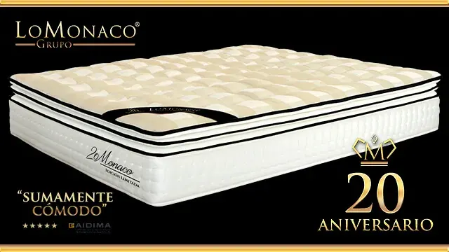

20 años cuidando de tu descanso

Cumplir 20 años de historia es un hito, un 20 aniversario que para Grupo Lo Monaco, es mucho más que 20 años de experiencia: supone haber logrado ser una compañía líder del sector del descanso en España, más de 700.000 clientes han visto en los colchones Lo Monaco, la solución ideal para dormir cada noche. Con más de un 95% de ellos satisfechos, podemos afirmar que somos un referente en salud y descanso, con un claro objetivo desde el principio, siempre hemos perseguido innovar en equipos de descanso que se traduzcan en los últimos avances para nuestros clientes.
Los inicios de Grupo Lo Monaco
La historia de la compañía surge en 1996, Grupo Lo Monaco irrumpió en el panorama del descanso, comercializando productos mediante un sistema de venta innovador, comparado con lo que se venía practicando hasta el momento en nuestro país. Este método de comercialización, importado de países europeos, se basaba en la atención al cliente mediante visitas domiciliarias.
En 1998 se incluyó en el catálogo la línea de productos de descanso, donde los colchones de Látex Natura se posicionaban como el producto estrella.
La firma siguió creciendo, a un ritmo constante y así en 2005, de la distribución y venta solo en Península, se amplió a todo el territorio nacional, con la creación de Lo Monaco Hogar Canarias, que se ocupó de distribuir los productos del Grupo en las Islas Canarias. En 2007 la compañía se fue adaptando a las demandas del mercado, presentando el Colchón Viscolátex Natura, que combinaba los beneficios del revolucionario material viscoelástico con las propiedades del látex. Y un detalle que marcaba la diferencia, el colchón Viscolátex Natura ha sido el colchón más imitado del sector del descanso en España.
Posteriormente y fruto de intensas investigaciones, Grupo Lo Monaco desarrolló el concepto Triple: una gama de colchones, cuya primera generación surgió en pos de encontrar el sueño perfecto. Gracias a diferentes investigaciones encaminadas a encontrar qué características debe reunir una cama para proporcionar un descanso de calidad, se concluyó que los tres elementos imprescindibles para dormir bien son confort, firmeza y temperatura.
Además, la oferta de colchones se ha ido diversificando y se han incorporado nuevos materiales, colchones viscoelásticos, colchones de muelles, colchones de espumación HR (High Resilience)… siendo el “material del futuro”, el grafeno, una de las más revolucionarias inclusiones, con el colchón Triple Grafeno.
Una breve historia sobre nuestros colchones
Colchón Látex Natura (1999): con el colchón de látex Natura, se introduce y se democratiza este tipo de colchones en nuestro país, gracias a la combinación perfecta entre calidad y precio.
Colchones Gran Natura (2005): se dio un paso en cuanto a evolución de un producto, incorporándole mejoras. Se iniciaba así una tendencia que se convertiría en casi una estrategia en la compañía, esta será el perfeccionamiento de una gama hasta conseguir su excelencia.
Viscolátex Natura (2007): con una clara orientación a la innovación, los colchones Viscolatex de Lo Monaco, combinaban los beneficios de la viscoelástica, con las conocidas propiedades del látex.
Gama Posturtherapy (2010): la personalización del colchón se materializa en la gama Posturtherapy, logrando un colchón casi a la medida del durmiente.
Triple Lo Monaco y Nuevo Triple Lo Monaco (2011-2013): fruto de la apuesta de la compañía en I+D+i se determina que son imprescindibles tres factores que debe aportar un colchón, que deben ir siempre unidos, si se pretende dormir bien: confort, firmeza y temperatura.
Colchón Triple Grafeno (2014): bajo el paraguas de la mejora constante, que auspicia proyectos revolucionarios para la compañía, se apuesta por materiales novedosos, como el caso del viscografeno.
Gama de colchones Triple Natura Plus (2015): la gama Triple Natura Plus llega al mercado como la revolución del confort, la temperatura óptima y la firmeza media garantizada, con una cuidada selección de núcleos y un atractivo acabado.
Distinciones y premios a lo largo de nuestra trayectoria
En 20 años de trayectoria, hemos trabajado arduamente para llevar el sueño y el descanso a cada hogar. Hemos recogido a lo largo de todo el camino, la satisfacción de nuestros clientes, plasmada diariamente en la web de Lo Monaco Opiniones, además de un puñado de reconocimientos y distinciones que resultan un acicate para continuar trabajando:
El Producto de Año: se trata del reconocimiento del consumidor al esfuerzo que realizan las marcas, y sus equipos de marketing, en materia de innovación. Concretamente han sido dos los años que nuestros productos han sido reconocidos con este galardón, 2013 con el colchón Triple Natura y 2015 con Triple Grafeno.
Certificado de Calidad e I+D+i: conseguido por primera vez en 2015 y renovado un año más este 2016. El trabajo continuado de investigación y búsqueda de nuevas tecnologías y materiales aplicados al descanso, ha hecho que en Grupo Lo Monaco nos convirtamos en la primera empresa del sector, que ha conseguido el Certificado I+D+i reglado por la Norma UNE 166002.
La gama de colchones Triple Natura Plus, unos colchones “sumamente cómodos”: AIDIMA o Instituto Tecnológico del Mueble, Madera, Embalaje y Afines, realizó un ensayo de la gama de colchones de látex Triple Natura Plus catalogándolos con el rango más alto de confort.
Cátedra de Investigación del Sueño de la UGR-Grupo Lo Monaco: el pasado abril se presentó la Cátedra, mediante la cual, en el marco del Laboratorio del Sueño de la Universidad de Granada (el más grande de Europa), ambas entidades investigarán de manera conjunta sobre los factores que nos hacen dormir mejor.
Por todo ello, había solo una única manera de celebrar este 20 Aniversario, seguir ofreciéndote el mejor de los descansos, para ello lanzamos el exclusivo Colchón Triple – 20º Aniversario – Edición Limitada ¿lo celebras con nosotros?